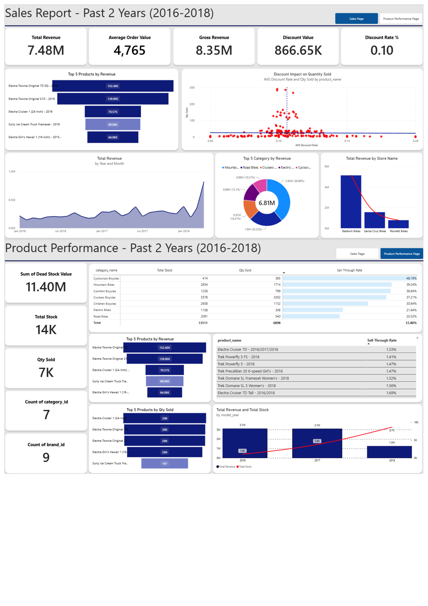

Sales & Product Performance Analysis Dashboard (Bike Stores case)
An interactive two-page Power BI dashboard analyzing sales and product performance for a bike retail business using the BikeStores Sample Database. Built with SQL Server for data modeling and DAX for KPI calculations, covering revenue trends, discount impact, and inventory health metrics like sell-through rate and dead stock value to support data-driven business decisions.
View Presentation (New)
Power BI / Power Query